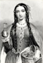
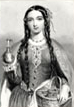

Alison Booth
Luckett, Margie Hersh, ed. Maryland Women, Baltimore, Maryland, 1931-1942. 3 vols. Baltimore: King, 1931 (v. 1); 1937 (v. 2) 1942 (v. 3).
First volume (517 pages); following, 417 and 444 pages respectively. Bound in black with the Maryland seal on the front cover in gold. Margie H. Luckett, "Editor and Publisher," appears to have signed each title page; this is supported by the bookplates of the Library of the University of Virginia: "Presented by Mrs. Edmund Boone Luckett" (typed). She appears in the frontispiece of the third volume, captioned Mrs. Edmond Boone Luckett, The Author, where in volume one Queen Henrietta Maria and in volume two Queen Anne appeared. Each volume is dedicated to one of Mrs. Luckett's daughters. The third volume differs in a glossy insert between copyright and dedication pages: the lyrics to the Star-Spangled Banner, facing a color image of the flag above the Pledge of Allegiance. This seems likely to be prompted by the war ongoing in 1942. The brief "Foreword" to v. 3 states: "Responding to a continued demand for Maryland Women, the author has compiled the third volume; this volume before leaving the press has been ordered by different universities, to be placed by volume 1 and volume 2 as reference books. The author has derived great pleasure in the contact of these native and adopted Maryland Women. To quote Carlyle, who said, 'he would give more for a single picture of a man than all the books that might be written of him.'" Short alphabetical entries (indexed) take very different forms, suggesting self- or family-contributed bios, most with glossy photographs of the subject. The contents appear almost entirely distinct in each volume, though the daughter Elise Luckett Balsam, featured in volume one, has an obituary in volume three (sadly inserted with her beautiful portrait and paginated "6A"), and one Mrs. John Nicholas Brown (Anne Kinsolving), misplaced in the alphabet at the very end of volume one, reappears 3: 23. These appear all to be white women; some could be Jewish, though this is not remarked; a number have careers in music, the arts, journalism, even sky-diving, and at least one is a suffrage advocate. Some portraits show pageantry, as women play the role of queens or the Goddess of Liberty (3: 28). The inclusion of English nobility and royalty goes along with a frequent insistence on genealogy and membership in the Daughters of the American Revolution.
Search OCLC WorldCat for this title.
Search Google Books for this title.